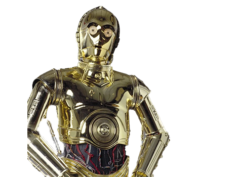

- 
c-3po
C-3PO foi um droide de protocolo que tinha a capacidade de falar e entender mais de seis milhões de idiomas. C-3PO foi construído em Affa, reconstruido por Anakin Skywalker em Tatooine. Ele foi companheiro por muito tempo do droide astromecânico R2-D2.Sua principal função, como droide de protocolo, foi ajudar a explicar os costumes de outras culturas e a tradução. Era muito leal a seus donos, e, desde sua criação, serviu a mais de quarenta donos.